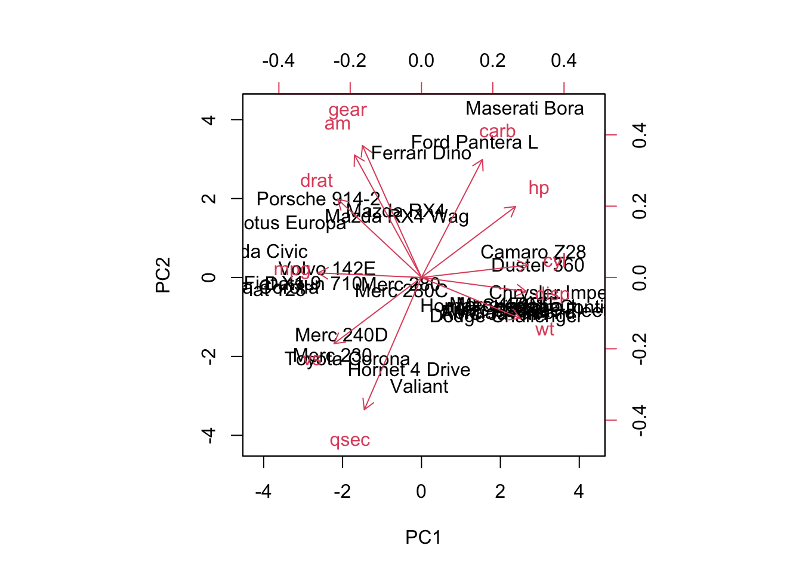

Last updated: 2024-09-06
Checks: 7 0
Knit directory: myproject/
This reproducible R Markdown analysis was created with workflowr (version 1.7.1). The Checks tab describes the reproducibility checks that were applied when the results were created. The Past versions tab lists the development history.
Great! Since the R Markdown file has been committed to the Git repository, you know the exact version of the code that produced these results.
Great job! The global environment was empty. Objects defined in the global environment can affect the analysis in your R Markdown file in unknown ways. For reproduciblity it’s best to always run the code in an empty environment.
The command set.seed(20240905) was run prior to running
the code in the R Markdown file. Setting a seed ensures that any results
that rely on randomness, e.g. subsampling or permutations, are
reproducible.
Great job! Recording the operating system, R version, and package versions is critical for reproducibility.
Nice! There were no cached chunks for this analysis, so you can be confident that you successfully produced the results during this run.
Great job! Using relative paths to the files within your workflowr project makes it easier to run your code on other machines.
Great! You are using Git for version control. Tracking code development and connecting the code version to the results is critical for reproducibility.
The results in this page were generated with repository version 9cfbfa1. See the Past versions tab to see a history of the changes made to the R Markdown and HTML files.
Note that you need to be careful to ensure that all relevant files for
the analysis have been committed to Git prior to generating the results
(you can use wflow_publish or
wflow_git_commit). workflowr only checks the R Markdown
file, but you know if there are other scripts or data files that it
depends on. Below is the status of the Git repository when the results
were generated:
Ignored files:
Ignored: .BidstackAds-b51a10b9/
Ignored: .RData
Ignored: .Rhistory
Ignored: .Trash/
Ignored: .android/
Ignored: Templates/
Ignored: Untitled Folder/
Ignored: ilifu/
Ignored: sql/
Untracked files:
Untracked: Library/
Untracked: .AliView/
Untracked: .CFUserTextEncoding
Untracked: .DS_Store
Untracked: .IdentityService/
Untracked: .R/
Untracked: .RDataTmp
Untracked: .Rapp.history
Untracked: .ServiceHub/
Untracked: .Xauthority
Untracked: .anaconda/
Untracked: .anyconnect
Untracked: .aspnet/
Untracked: .azcopy/
Untracked: .bash_history
Untracked: .bash_profile
Untracked: .bashrc
Untracked: .bidstack-device-id
Untracked: .cache/
Untracked: .cisco/
Untracked: .conda/
Untracked: .condarc
Untracked: .config/
Untracked: .continuum/
Untracked: .cups/
Untracked: .docker/
Untracked: .dotnet/
Untracked: .dropbox/
Untracked: .gitconfig
Untracked: .gitignore
Untracked: .globusonline/
Untracked: .gsutil/
Untracked: .idlerc/
Untracked: .ipynb_checkpoints/
Untracked: .ipython/
Untracked: .jupyter/
Untracked: .keras/
Untracked: .lesshst
Untracked: .local/
Untracked: .matplotlib/
Untracked: .mono/
Untracked: .nuget/
Untracked: .nuuid.ini
Untracked: .oracle_jre_usage/
Untracked: .pdfbox.cache
Untracked: .python_history
Untracked: .sqlite_history
Untracked: .ssh/
Untracked: .tcshrc
Untracked: .templateengine/
Untracked: .test.txt.swp
Untracked: .viminfo
Untracked: .vscode/
Untracked: .wget-hsts
Untracked: .wine/
Untracked: .wing101-9
Untracked: .xonshrc
Untracked: .zprofile
Untracked: .zprofile.pysave
Untracked: .zsh_history
Untracked: .zsh_sessions/
Untracked: .zshrc
Untracked: Applications (Parallels)/
Untracked: Applications/
Untracked: Chunk.R
Untracked: Desktop/
Untracked: Documents/
Untracked: Downloads/
Untracked: Dropbox/
Untracked: Library/
Untracked: Movies/
Untracked: Music/
Untracked: Parallels/
Untracked: Pedigree.R
Untracked: Pictures/
Untracked: PlayOnMac's virtual drives
Untracked: Projects/
Untracked: Public/
Untracked: Untitled.ipynb
Untracked: _TyranoGameData/
Untracked: anaconda3/
Untracked: annotation/
Untracked: bcftools-1.9.tar.bz2
Untracked: bcftools-1.9/
Untracked: clumping_EX.txt
Untracked: df.csv
Untracked: df_R_tut.csv
Untracked: eval "$(ssh-agent -s)"
Untracked: eval "$(ssh-agent -s)".pub
Untracked: gfortran-4.8.2-darwin13.tar.bz2
Untracked: gnomad.genomes.v3.1.1.sites.chr1.vcf.bgz
Untracked: myenv/
Untracked: text.txt
Untracked: venv/
Note that any generated files, e.g. HTML, png, CSS, etc., are not included in this status report because it is ok for generated content to have uncommitted changes.
There are no past versions. Publish this analysis with
wflow_publish() to start tracking its development.
#install.packages("Hmisc")
library(Hmisc)
library(dplyr)
library(ggplot2)
data("airquality")
data("mtcars")Firstly, in order to conduct your analysis you need to have your data.
The source of data depends on your research question and project requirements.
You need to ensure that the data you obtain is of high-quality and of relevance to your problem.
There are multiple methods for dealing with missing data.
If the missing values are random within your data set and don’t seem to follow a pattern (i.e., there seem to be certain columns with high missingness when compared with others), one could replace these missing values with the mean or median of the column.
In most cases, rows with high missingness could introduce bias. Therefore, it would be more accurate to remove these samples to avoid biasing your analysis.
# For the below we will be using the dataset: "airquality" as this data has missing values to remove.
# Check for missing values
missing_values <- sapply(airquality, function(x) sum(is.na(x)))
# Print the count of missing values in each column
print(missing_values) Ozone Solar.R Wind Temp Month Day
37 7 0 0 0 0 # Create a copy of the dataset for cleaning
airquality_clean <- airquality
# Calculate the median for each column (ignoring NA values)
medians <- sapply(airquality_clean, function(x) median(x, na.rm = TRUE))
# Replace NA values with the corresponding column medians
for (col in names(airquality_clean)) {
airquality_clean[is.na(airquality_clean[[col]]), col] <- medians[col]
}# Alternatively, remove rows with any missing values (if applicable)
airquality_clean_2 <- na.omit(airquality)
# Now we check for cleaned data missing values:
missing_values <- sapply(airquality_clean, function(x) sum(is.na(x)))
missing_values_2 <- sapply(airquality_clean_2, function(x) sum(is.na(x)))
cat("The number of missing values from 1st dataset:", sum(missing_values),
"and from the 2nd dataset:", sum(missing_values_2), "\n")The number of missing values from 1st dataset: 0 and from the 2nd dataset: 0 Outliers in a dataset are values that deviate from the rest of your data and if included could skew your analysis and decrease the accuracy of your analysis.
One can identify outliers using z-score normalisation to
calculate how many SD’s your value is from the mean (i.e., evaluates how
unsual a data point is).
# Calculate z-scores for each feature
z_scores <- scale(airquality_clean_2)
# Identify outliers using a z-score threshold (e.g., 3 standard deviations)
outlier_threshold <- 2
outliers <- apply(z_scores, 2, function(x) sum(abs(x) > outlier_threshold))
# Print the number of outliers in each column
print(outliers) Ozone Solar.R Wind Temp Month Day
6 0 5 3 0 0 Once you have identified outliers you can either remove them or use a cut-off threshold to only exclude values above/below a certain score.
# Remove outliers based on the threshold
# Keep rows where all feature z-scores are within the threshold
airquality_no_outliers <- airquality_clean_2[apply(z_scores, 1, function(x) all(abs(x) <= outlier_threshold)), ]
# Recalculate z-scores for the dataset without outliers
z_scores_no_outliers <- scale(airquality_no_outliers)
# Identify remaining outliers
outliers_no_outliers <- apply(z_scores_no_outliers, 2, function(x) sum(abs(x) > outlier_threshold))
# Print the number of outliers in each column after removal
print(outliers_no_outliers) Ozone Solar.R Wind Temp Month Day
5 0 2 3 0 0 Applying min-max normalization will define the values within a fixed range, commonly [0, 1].
Typically used when you want to ensure all features are within the same range for certain machine learning algorithms (like neural networks) which are sensitive to the magnitude of the input value.
data("mtcars")
# Min-max normalize the mpg variable
mtcars$mpg_mm <- scale(mtcars$mpg,
center = min(mtcars$mpg),
scale = max(mtcars$mpg) - min(mtcars$mpg))
# Now we can check what minimum and maximum of the normalized mpg variable is:
cat("The minimum of the normalized mpg variable is:", min(mtcars$mpg_mm),
"and the maximum is:", max(mtcars$mpg_mm), "\n")The minimum of the normalized mpg variable is: 0 and the maximum is: 1 standardized and re-scaled in these
scenarios.Standardizes the data such that the mean of the values becomes 0 and the standard deviation becomes 1.
There is no fixed range after standardization and the values are rescaled relative to their SD
data("mtcars")
# Standardize the 'mpg' feature manually
mpg_standardized <- (mtcars$mpg - mean(mtcars$mpg)) / sd(mtcars$mpg)
# Alternatively, use the scale function to standardize multiple columns
data_standardized <- as.data.frame(scale(mtcars))Standardized ‘mpg’ values:
Min. 1st Qu. Median Mean 3rd Qu. Max.
-1.6079 -0.7741 -0.1478 0.0000 0.4495 2.2913 Data reduction is a crucial step when working with high-dimensional data sets. Reducing the number of variables (features) or the size of your dataset helps reduce the risk of having an overfitting model in downstream analyses. These methods can improve the accuracy and performance of your model. By decreasing the size of your dataset one can also decrease the comutational burden.
Principal Component Analysis (PCA): PCA is a commonly used technique for dimensionality reduction. It transforms the data into a new coordinate system where the greatest variance lies on the first principal components.
Feature Selection: This involves selecting a subset of relevant features based on certain criteria such as correlation or variance.
Sampling: Instead of using the entire dataset, you can sample a representative portion of the data for training.
Aggregation: Aggregating data points into groups (e.g., by averaging or summing) to reduce the number of instances while retaining key characteristics.
# Standardize the dataset (scale to mean 0 and standard deviation 1)
mtcars_scaled <- as.data.frame(scale(mtcars))
# Perform PCA to reduce the dataset to two principal components
pca_result <- prcomp(mtcars_scaled, center = TRUE, scale. = TRUE)
# Get summary of PCA to show variance explained by each component
summary(pca_result)Importance of components:
PC1 PC2 PC3 PC4 PC5 PC6 PC7
Standard deviation 2.5707 1.6280 0.79196 0.51923 0.47271 0.46000 0.3678
Proportion of Variance 0.6008 0.2409 0.05702 0.02451 0.02031 0.01924 0.0123
Cumulative Proportion 0.6008 0.8417 0.89873 0.92324 0.94356 0.96279 0.9751
PC8 PC9 PC10 PC11
Standard deviation 0.35057 0.2776 0.22811 0.1485
Proportion of Variance 0.01117 0.0070 0.00473 0.0020
Cumulative Proportion 0.98626 0.9933 0.99800 1.0000# Create a biplot to visualize PCA (first two principal components)**** make better
biplot(pca_result, scale = 0)
mtcars prior to feature selection:
str(mtcars)'data.frame': 32 obs. of 11 variables:
$ mpg : num 21 21 22.8 21.4 18.7 18.1 14.3 24.4 22.8 19.2 ...
$ cyl : num 6 6 4 6 8 6 8 4 4 6 ...
$ disp: num 160 160 108 258 360 ...
$ hp : num 110 110 93 110 175 105 245 62 95 123 ...
$ drat: num 3.9 3.9 3.85 3.08 3.15 2.76 3.21 3.69 3.92 3.92 ...
$ wt : num 2.62 2.88 2.32 3.21 3.44 ...
$ qsec: num 16.5 17 18.6 19.4 17 ...
$ vs : num 0 0 1 1 0 1 0 1 1 1 ...
$ am : num 1 1 1 0 0 0 0 0 0 0 ...
$ gear: num 4 4 4 3 3 3 3 4 4 4 ...
$ carb: num 4 4 1 1 2 1 4 2 2 4 ...# Step 1: Calculate the variance for each feature (column)
feature_variances <- apply(mtcars, 2, var)
# Step 2: Set a threshold for filtering low variance features (e.g., use the 25th percentile of the variance)
threshold <- quantile(feature_variances, 0.25)
# Step 3: Retain only the features with variance above the threshold
filtered_data <- mtcars[, feature_variances > threshold]mtcars after feature selection:
str(filtered_data)'data.frame': 32 obs. of 8 variables:
$ mpg : num 21 21 22.8 21.4 18.7 18.1 14.3 24.4 22.8 19.2 ...
$ cyl : num 6 6 4 6 8 6 8 4 4 6 ...
$ disp: num 160 160 108 258 360 ...
$ hp : num 110 110 93 110 175 105 245 62 95 123 ...
$ wt : num 2.62 2.88 2.32 3.21 3.44 ...
$ qsec: num 16.5 17 18.6 19.4 17 ...
$ gear: num 4 4 4 3 3 3 3 4 4 4 ...
$ carb: num 4 4 1 1 2 1 4 2 2 4 ...
sessionInfo()R version 4.4.1 (2024-06-14)
Platform: aarch64-apple-darwin20
Running under: macOS Sonoma 14.6.1
Matrix products: default
BLAS: /Library/Frameworks/R.framework/Versions/4.4-arm64/Resources/lib/libRblas.0.dylib
LAPACK: /Library/Frameworks/R.framework/Versions/4.4-arm64/Resources/lib/libRlapack.dylib; LAPACK version 3.12.0
locale:
[1] en_US.UTF-8/en_US.UTF-8/en_US.UTF-8/C/en_US.UTF-8/en_US.UTF-8
time zone: Africa/Johannesburg
tzcode source: internal
attached base packages:
[1] stats graphics grDevices utils datasets methods base
other attached packages:
[1] ggplot2_3.5.1 dplyr_1.1.4 Hmisc_5.1-3
loaded via a namespace (and not attached):
[1] sass_0.4.9 utf8_1.2.4 generics_0.1.3 stringi_1.8.4
[5] digest_0.6.37 magrittr_2.0.3 evaluate_0.24.0 grid_4.4.1
[9] fastmap_1.2.0 rprojroot_2.0.4 workflowr_1.7.1 jsonlite_1.8.8
[13] backports_1.5.0 nnet_7.3-19 Formula_1.2-5 gridExtra_2.3
[17] promises_1.3.0 fansi_1.0.6 scales_1.3.0 jquerylib_0.1.4
[21] cli_3.6.3 rlang_1.1.4 munsell_0.5.1 withr_3.0.1
[25] base64enc_0.1-3 cachem_1.1.0 yaml_2.3.10 tools_4.4.1
[29] checkmate_2.3.2 htmlTable_2.4.3 colorspace_2.1-1 httpuv_1.6.15
[33] vctrs_0.6.5 R6_2.5.1 rpart_4.1.23 lifecycle_1.0.4
[37] git2r_0.33.0 stringr_1.5.1 htmlwidgets_1.6.4 fs_1.6.4
[41] foreign_0.8-87 cluster_2.1.6 pkgconfig_2.0.3 pillar_1.9.0
[45] bslib_0.8.0 later_1.3.2 gtable_0.3.5 data.table_1.16.0
[49] glue_1.7.0 Rcpp_1.0.13 highr_0.11 xfun_0.47
[53] tibble_3.2.1 tidyselect_1.2.1 rstudioapi_0.16.0 knitr_1.48
[57] htmltools_0.5.8.1 rmarkdown_2.28 compiler_4.4.1